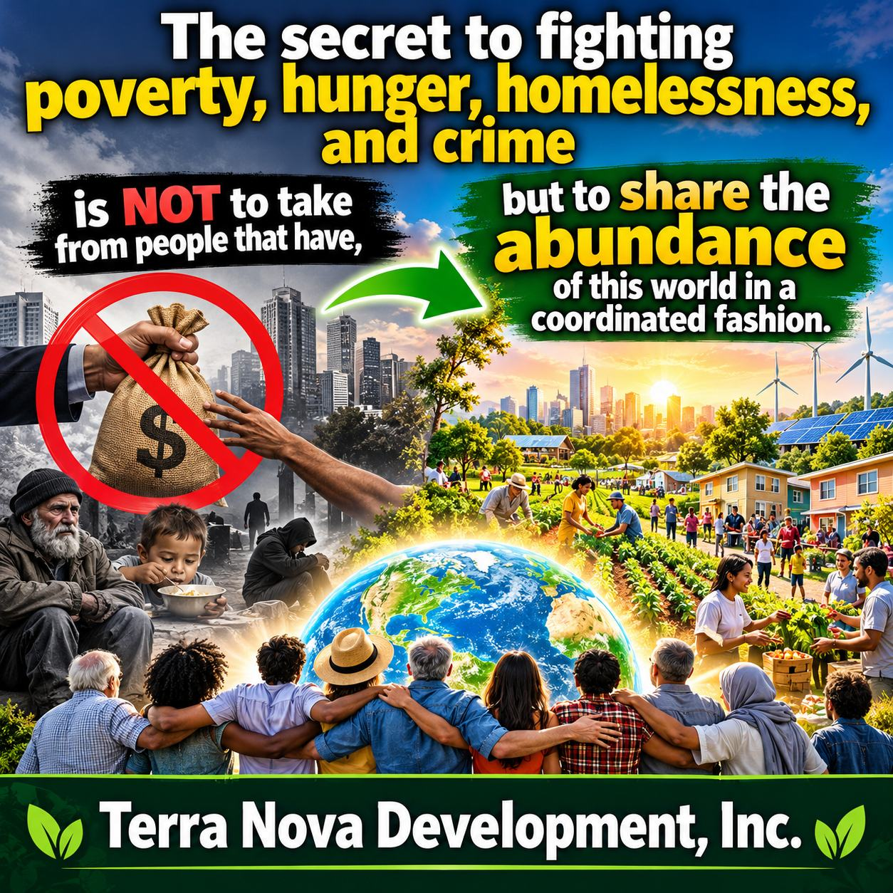

The World Has Enough. We Just Need to Organize It.

The Secret to Fighting Poverty, Hunger, Homelessness, and Crime
Humanity has accomplished extraordinary things. We have sent spacecraft beyond our solar system. We have developed computers capable of processing billions of calculations per second. We can communicate instantly with people on the opposite side of the planet. We have developed technologies capable of producing enormous quantities of food, building millions of homes, generating clean energy, and educating virtually everyone on Earth.
And yet, millions of people still go hungry. Millions have no permanent home. Families struggle to afford basic necessities. Communities suffer from poverty, desperation, and crime.
How can a civilization capable of such extraordinary achievements still fail to provide the basic necessities of life?
I believe the answer is remarkably simple. We do not have a fundamental shortage of resources, knowledge, technology, or human ability. We have a failure of coordination.
Abundance Is Already Here
Look around the world. We have agricultural land, manufacturing facilities, construction equipment, transportation networks, computers, communication systems, and millions of people who want meaningful work.
We have the knowledge to grow food, build homes, deliver healthcare, provide education, and develop sustainable communities.
These resources are not distributed equally. Some are underutilized, some are inaccessible, and others are consumed inefficiently. Real shortages exist in particular places and circumstances.
But humanity possesses an extraordinary collective capacity to meet human needs. What if we organized that capacity around a common objective? What if we made ensuring that everyone has the necessities of life one of civilization's highest priorities?
This Is Not About Taking From Those Who Have
Too often, discussions about poverty become arguments about wealth. Some believe the solution is simply to take resources from wealthy people and redistribute them. Others believe the existing economic system should be left entirely alone.
I believe we should consider another approach. Instead of concentrating on dividing existing wealth, let us concentrate on organizing our productive capacity to create more abundance and make it accessible to everyone.
We do not need to punish success. We need to expand opportunity. We need to connect unused resources with unmet needs. We need to coordinate businesses, governments, nonprofit organizations, universities, volunteers, and ordinary citizens.
Fair taxation, public investment, private enterprise, charitable contributions, and community cooperation can all play constructive roles. The objective is not to make everyone equally poor. The objective is to make poverty unnecessary.
Imagine a Coordinated System of Abundance
Imagine a community where surplus food is systematically connected with hungry families.
Imagine a construction system that combines modern manufacturing, sustainable materials, available land, and trained workers to produce affordable housing on a massive scale.
Imagine a healthcare system where everyone receives necessary medical care without financial barriers.
Imagine a university available free of charge to every human being with an internet connection, providing access to humanity's accumulated knowledge and the extraordinary capabilities of artificial intelligence.
Imagine community centers where people can freely give what they no longer need and receive what they do need.
Imagine a society where fewer people turn to crime out of desperation because legitimate opportunities, stability, education, and essential resources are readily available.
These are not fantasies that require technologies we have yet to invent. Much of the necessary knowledge and technology already exists. What is missing is an integrated system that brings everything together.
Terra Nova Development: A Systems Engineering Approach
I spent my professional career working with systems. Systems engineering teaches us that complex problems cannot always be solved by addressing individual components independently. We must understand how the components interact.
Poverty affects housing. Housing affects health. Health affects education and employment. Education affects economic opportunity. Economic opportunity affects crime, family stability, and community well-being. Everything is connected.
If we attempt to solve these problems separately, we often create expensive programs that treat symptoms without addressing underlying causes. But if we design an integrated system, improvements in one area can reinforce improvements in others.
That is the fundamental philosophy behind Terra Nova Development, Inc.
The vision includes interconnected initiatives such as:
Terra Nova University: Free, lifelong education available worldwide, incorporating artificial intelligence and humanity’s accumulated knowledge.
Terra Nova Healthcare: A vision of universal access to healthcare, emphasizing prevention, efficiency, and eliminating financial barriers.
Terra Nova Community Centers: Community facilities providing shelter, essential services, assistance, and opportunities for rebuilding lives.
Give & Take: Community sharing centers where useful goods can circulate freely between people who have them and people who need them.
Sustainable Housing: Affordable construction using modern methods, locally available resources, and environmentally responsible materials.
Food Production and Distribution: Coordinated agriculture, aquaculture, food recovery, and distribution systems designed to reduce hunger and waste.
These initiatives are proposed components of a larger vision. They will require planning, partners, funding, and real-world testing. The objective is not to create another collection of disconnected charitable programs. The objective is to develop a coordinated system in which every component strengthens the others.
Artificial Intelligence Changes Everything
For the first time in human history, we are developing tools capable of helping us coordinate enormously complex systems at unprecedented speed.
Artificial intelligence can assist with planning, education, resource allocation, logistics, engineering, research, and communication.
Imagine using AI to identify where food is needed, where surplus food exists, and how to transport it efficiently. Imagine using AI to coordinate construction projects, estimate material requirements, organize volunteers, and identify opportunities to reduce costs. Imagine using AI to help provide personalized education to billions of people.
These capabilities must be developed responsibly, with human oversight, privacy protections, and accountability. But the possibilities are extraordinary. We can use artificial intelligence not merely to make individual companies more productive, but to help make civilization itself more effective at meeting human needs.
A New Measure of Success
We often measure national success through gross domestic product, corporate profits, stock market performance, and economic growth. Those measures have value. But I believe we need additional measures.
How many people have adequate food? How many have safe housing? How many can obtain healthcare? How many have access to education? How many people have opportunities to contribute their talents? How much human suffering have we eliminated? How effectively are we using the resources available to us?
A successful civilization should be judged not only by how much wealth it produces, but by how well that wealth and productive capacity improve human lives.
There Is No Them. There Is Only Us.
The world is divided by national borders, political parties, religious differences, economic classes, and countless other distinctions. But beneath those differences, we share the same fundamental human needs.
We all need food, shelter, safety, belonging, opportunity, and hope. The suffering of another human being is not merely someone else's problem. It is a challenge to our collective humanity.
We do not have to agree about everything to work together on the things that matter most. We can disagree politically and still feed hungry children. We can worship differently and still build homes for people without shelter. We can come from different countries and still share knowledge that improves everyone's lives.
There is no them. There is only us.
Join Me. Let’s Change the World.
Terra Nova Development begins with an idea. But ideas become powerful when people organize around them.
I am inviting engineers, educators, healthcare professionals, business owners, programmers, researchers, students, philanthropists, community leaders, and ordinary citizens to participate in developing this vision.
We need people who can help transform concepts into workable systems. We need people who can question assumptions, identify problems, develop solutions, and help test those solutions in real communities. We need imagination, compassion, discipline, and cooperation.
We do not have to solve every problem tomorrow. We can begin with one community, one project, one practical improvement, and build from there.
The abundance of this world is not an excuse to ignore the challenges of poverty. It is a reason to believe those challenges can be overcome.
The secret to fighting poverty, hunger, homelessness, and crime is not simply to take from people who have. It is to share the abundance of this world in a coordinated fashion.
We have the knowledge. We have the technology. We have the resources. We have each other.
Now let's organize them to build a better world. Join me. Let's change the world.
Terra Nova Development, Inc. | Vision and article by Willis Butts, Founder
There is no them. There is only us.